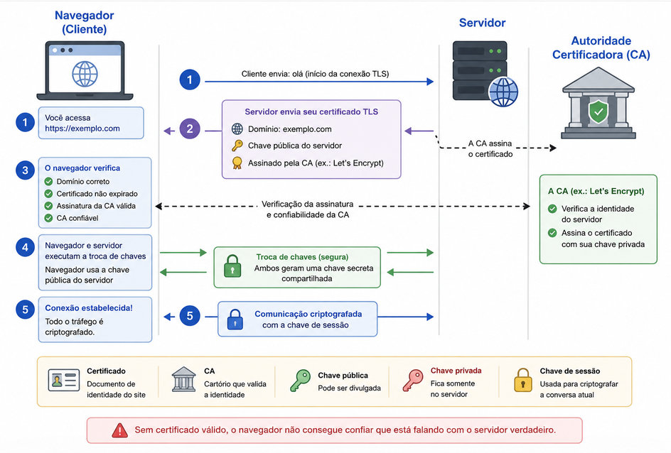

Sobre confiança e centralização
Hoje eu quero trazer uma mescla de notícias sobre recaptcha e certificados digitais e como precisamos deles para nossa privacidade e segurança. A partir daí quero ter uma discussão sobre como esses assuntos tem a ver com confiança e centralização de poder
Veja no canal:
Google e os captchas
https://reclaimthenet.org/google-broke-recaptcha-for-de-googled-android-users
https://cybernews.com/privacy/google-qr-code-recaptcha-requires-approved-phone/
- Sistemas mais privados, vêem mais captcha?
Let’s Encrypt e a lei dos EUA
- O Let’s Encrypt faz um trabalho importantíssimo de prover certificados TLS gratuitamente desde 2012. E foi essencial para a popularização da criptografia de ponta a ponta em toda internet
- Muito rapidamente como funciona o sistema de validação de certificado:

-
Você acessa um site (https://...)
-
O servidor envia seu certificado TLS.
- Contém o domínio (exemplo.com).
- Contém a chave pública do servidor.
- É assinado por uma Autoridade Certificadora (CA), como Let's Encrypt ou DigiCert.
-
O navegador verifica:
- Se o certificado foi emitido para o domínio correto.
- Se não expirou.
- Se a assinatura da CA é válida.
- Se a CA é confiável.
-
Se tudo estiver correto, navegador e servidor executam um protocolo de troca de chaves.
-
O seu navegador precisa de um pacote de certificados de CA atualizado (muitas vezes é o que faz dispositivos muito antigos terem problemas de acesso à internet)
-
Antes da existência do Let’s Encrypt era muito comum ter que pagar desde de 5 até centenas de dólares por alguns certificados válidos
-
Emitir um certificado é trivial, qualquer um pode fazer. O “problema” é emitir um certificado para um CA válido no navegador
-
O que nos leva ao problema, o Let’s Encrypt colocou nos termos deles mais explicitamente
https://news.ycombinator.com/item?id=48453275
- Seguir as leis dos EUA
O problema da confiança
-
Os problema que os captcha, certificados digitais e várias outras ferramentas básicas da ‘internet livre’ resolvem são inerentemente difíceis de fazer quando o órgão centralizador é enfraquecido ou não confiamos nele.
-
A solução padrão geralmente é: “esse órgão ou essa pessoa tem o poder de decidir e delega esse poder em camadas”
-
É o “problema dos cartórios” que a gente vê vários anarcocapitalistas se embananando: “ah, mas tinham cartórios privados na Islândia medieval”
- O que cartórios provêm não é estampar um documento de maneira etérea, na realidade é o consenso social sobre essas questões.
-
Existem diversas soluções ‘técnicas’ para esse tipo de problema e inclusive a blockchain / criptotokens muitas vezes são sugeridas para isso
- Esse foi o responsável pela criptotokenização de tudo nos anos da febre das criptomoedas
-
A ideia é criar um sistema distribuído onde cada participante é obrigado a despender recursos (a mineração, a queima de tokens, o staking que lhes é “imposto”) para que o sistema funcione e se possa receber o benefício (por exemplo quantidades do token)
- Mineração Bitcoin: Despende processamento (eletricidade) para validar transações e resolver um puzzle criptográfico → A cada 10 min 1 participante da rede resolve o problema em média e ganha um prêmio (sorteio) → Um bloco é colocado na rede e apenas se as transações forem válidas o prêmio é pago
-
Acontece que a comunidade dos cripto é a terra da discórdia, dos golpes, esquemas de pirâmede e etc… por que será?
-
Isso não é um problema tecnológico necessariamente, mas decorre da estrutura social em que o blockchain é CRIADO e inserido. Se o incentivo financeiro é o centro da validação de identidade, por exemplo, quem tem o poder financeiro sempre terá vantagens sobre o resto da rede.
Conclusão e voltando pra Google e Let’s Encrypt
-
Vocês já se perguntaram por que os EUA tem a sua internet aberta para todo o mundo e inclusive financiam projetos abertos de segurança, privacidade e criptografia? É pra gente conseguir resistir melhor à dominação deles?
-
O problema difícil que nos defrontamos aqui é:
- Precisamos lidar com tráfego falso e malicioso na rede → Google faz isso
- Precisamos criptografar o tráfego HTTP → Let’s Encrypt faz isso
-
Ambas instituições tem seus próprios interesses e/ou estão sujeitas aos interesses econômicos (e portanto políticos) dos EUA
-
A mentira da ‘internet livre’ e ‘100% técnica’ funciona para os EUA porque nas marcas do nascimento dessa tecnologia estão os interesses de hegemonia cultural e tecnológica do império dos EUA
-
Mas é no momento político atual que a gente entende que as soluções de confiança e segurança que eles “tão altruísticamente” construíram pra gente podem e vão ser usadas contra a gente
-
Esse é um vídeo contra tudo que os EUA tocaram? Não. Porém é mais um aspecto daquela listinha de ‘soberania digital’ que a gente começou a fazer aqui.